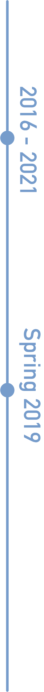
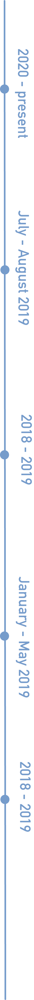

Jordan Morrison
Visual Communication Design
BFA Visual Communication Design
Minor Marketing Management
California State Polytechnic University, Pomona
Panhellenic Vice President 2019 - 2020, Fall 2019 Dean’s List, Winter 2018 Dean’s List
Visual Communication Design Minor Marketing Management
Florence Univeristy of the Arts Semester Abroad
Worked with local businesses to create work for their use in marketing. Group collaboration created a full rebranding and marketing strategy for hotel Palazzo Guicciardini and was presented to the client. Posters were designed for Florence University of the Art’s school run fashion shows and for the student run restaurant.

Technical Skills
Adobe Illustrator Branding
Adobe InDesign HTML/CSS
Adobe Photoshop Marketing
Adobe XD Typography
Bootstrap UX/UI Design
Dreamweaver Web Design
Git
Microsoft Office
Procreate
Personal Skills
Communication
Creativity
Hardworking
Leadership
Organization
Problem Solving
Teamwork
Project
Melted is a San Diego ice cream festival where vendors from across the county gather to sell their ice cream for friends and family during a weekend event. Melted was a class assignment to create a festival and design the logo, branding, website and festival merchandise. This project displays branding, UX/UI, and digital design.
Click or scan to view Melted
Experience
Graphic Design Intern
Stem Center USA
Designed flyers and advertising graphics for print and social media for the Stem Center USA to use for promotions and information packets. This internship involved working directly with the directors of Stem Center USA to create the designs on a weekly basis.
Graphic Design Marketing Intern
Mitchell1
Social media graphics, videos, and flyers were created under the direction of the Senior Graphic Designer as well as then Senior Marketing Manager. Graphics, videos, and flyers were a collaboration with the team and were made for social media. Modifying logos and flyers for a third party company that works with Mitchell1 was also part of the internship.
Freelance Graphic Designer
Sage Creek High School
Designed posters and flyers for the Baseball team’s Winter and Summer camp sessions that were offered to the public. Worked with one of the team’s coaches to figure out the information and design direction they were looking for and sent drafts back and forth until final approval.
Featured Blogger
International Studies Abroad
After applying and being chosen, I was one of eight bloggers for the semester who blogged for the ISA Wordpress website while studying abroad in Spring of 2019. Three separate blogs were created throughout the semester about different cultural topics such as art, lifestyle, and experience.
Social Media Director
Alpha Xi Delta Fraternity
As a member of Alpha Xi Delta, the position of Social Media Director was one that involved an application process, including an interview and selection. The position required running and managing the Kappa Delta chapter’s instagram page by posting several times a week, finding and editing photos to use, and interacting with followers. Some of the posts included designing graphics and posts as well.
